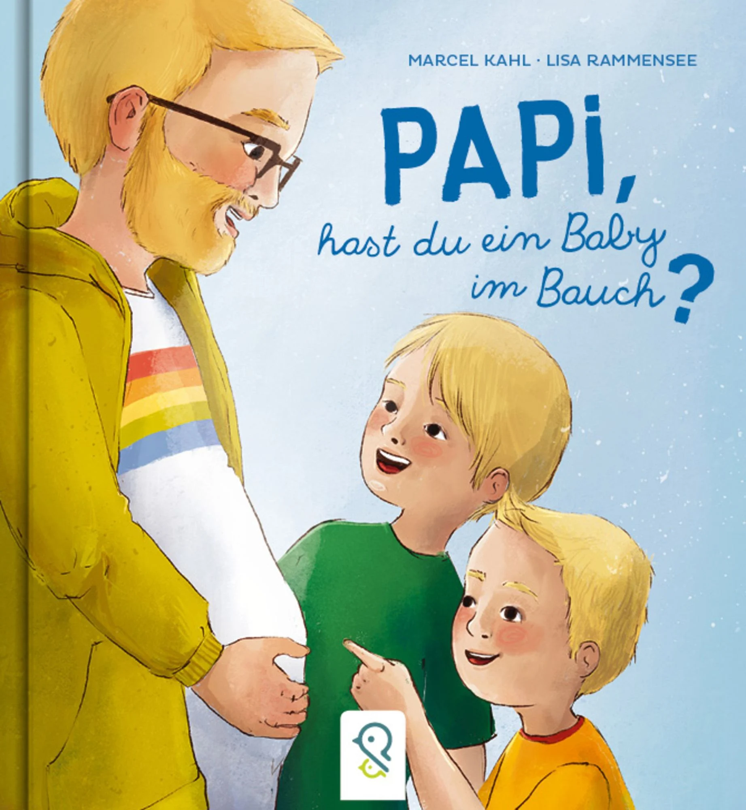

Kahl, Markus; Rammensee, Lisa (2023): Papi, hast du ein Baby im Bauch? Berlin: Klein & groß Verlag, 1. Auflage.
ISBN 978-3-946360-64-3
Beschreibung
Joshua und Jannis sind Zwillinge, und als Eltern haben sie einen Papi und einen Papa. Da fragen sich die beiden
natürlich irgendwann, aus welchem Bauch sie als Babys einst auf diese Welt kamen. So erzählt Papi ihnen von der Frau
im fernen Land, in deren Bauch sie neun Monate wuchsen. Es ist die etwas andere Geschichte einer Regenbogenfamilie.
- Ein Bilderbuch zum Thema Leihmutterschaft
- plus ein Interview mit dem Autor.
Der Autor:
Marcel Kahl, 1979 in Einbeck geboren, studierte Hotelbetriebswirtschaft an der Hotelfachschule Fulda. Nach einigen Jahren in Frankfurt am Main und Wien kehrte er nach Nordhessen zurück, wo er bis heute mit seinem Mann Christian und den gemeinsamen Zwillingen glücklich und angekommen lebt. Seit 2018 arbeitet Marcel Kahl im Gesundheitswesen und geht seiner Passion für (Vielfalts-)Kinderbücher ehrenamtlich und nebenberuflich nach.
Die Illustratorin:
Lisa Rammensee, 1990 in Nürnberg geboren, hat Kommunikationsdesign in Trier und Illustration in Hamburg studiert und arbeitet nun als freie Illustratorin an Kinder- und Kochbüchern. Sie lebt mit ihrem Partner auf ihrem Hof Meisennest in Sachsen-Anhalt, wo sie zwischen Schreibtisch, Gemüsebeeten und Hühnern ihren Leidenschaften nachgeht. Und wenn sie nicht gerade am Zeichentisch sitzt, backt sie vermutlich Brot oder macht lange Spaziergänge.